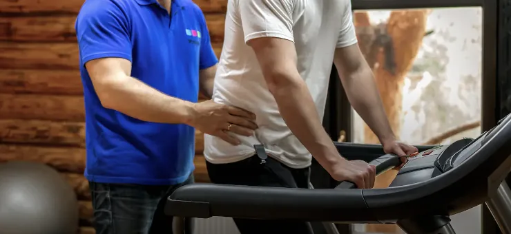
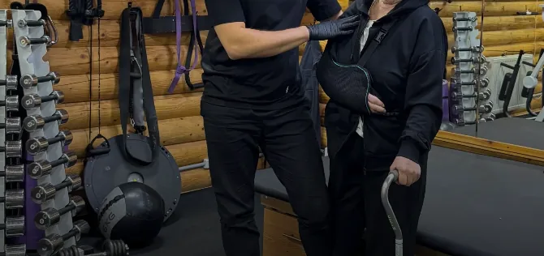
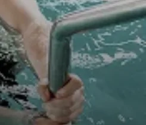
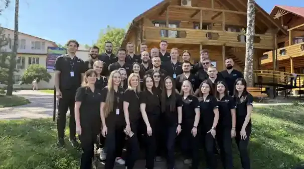

Комплексна реабілітація для повернення до самостійного життя
Для дорослих і дітей після інсульту, травм і операцій, з проживанням серед лісу на Львівщині.

Розкажіть про стан, і ми відповімо, чи зможемо прийняти.
(096) 680 77 79Розкажіть про стан, і ми відповімо, чи зможемо прийняти.
(096) 680 77 79Чи візьмуть нас у такому стані?
Сюди приїжджали лежачими, із трахеостомою та гастростомою. Чи зможемо прийняти саме вас, скажемо після розмови про стан.
Рухи, мовлення, ковтання й побутові навички. Заняття щодня з 9:00 до 18:00: фізичний терапевт, басейн, ерготерапія, терапевт мови та мовлення, психолог.
Реабілітація після інсульту (Розділ у розробці)Пам'ять, мовлення, координація. Фахівці супроводжують людину від перших кроків відновлення до повернення додому.
Реабілітація після ЧМТ (Розділ у розробці)Рухи, чутливість, побутова самостійність. У кожного пацієнта свій план відновлення і своя команда фахівців.
Реабілітація після травми хребта (Розділ у розробці)Реабілітація не зупиняє хворобу. Її мета в тому, щоб якомога довше зберігати рухливість, самостійність і якість життя.
Реабілітація при розсіяному склерозі (Розділ у розробці)Етап після завершення лікування: рухливість, витривалість, якість життя. Робота зі слабкістю, болем, лімфедемою.
Реабілітація після онкології (Розділ у розробці)Рух суглоба, сила м'язів, координація, правильна хода. Фізичний терапевт поєднує вправи, заняття в басейні, фізіотерапію й масаж.
Реабілітація після ендопротезування (Розділ у розробці)Мінно-вибухові поранення, травми хребта, черепно-мозкові травми, ампутації. Є окремий соціальний пакет. Направлення не обов'язкове: достатньо виписки з госпіталю й результатів обстежень.
Реабілітація військових (Розділ у розробці)Центр працює з дорослими й дітьми. Для дітей є інклюзивний майданчик і аніматори. Про вік дитини й проживання з батьками запитайте під час дзвінка.
Дитяча реабілітація (Розділ у розробці)З чим сюди приїжджали
Кожен стан різний. Це досвід окремих людей, а не обіцянка результату.
-
Андрій, мінно-вибухове поранення
- Приїхав
- Не рухався, не розмовляв, трахеостома та гастростома.
- Зараз
- Розмовляє, трахеостому й гастростому зняли, вчиться ходити.
-
Андрій, ураження спинного мозку
- Приїхав
- На кріслі колісному.
- Зараз
- Ходить з одноопорною палицею.
-
Іван, після інсульту
- Приїхав
- Не працювала права сторона тіла, порушене мовлення.
- Зараз
- Пересувається з паличкою, став самостійним у побуті.
-
Іванко, дитина
- Приїхав
- Не тримав добре голову, не міг перевертатися.
- Зараз
- Сам встає з підлоги, розмовляє, самостійно їсть.
Фахівці спокійно пояснювали кожен етап.
Як там усе буде?
Стаціонарний курс триває тижнями, тому важливо знати, де людина житиме і хто буде поруч.

- Дерев'яні будиночки
- Готельного типу, серед лісу, з пандусами й адаптованими санвузлами.
- Кнопка виклику
- Виклик медперсоналу, Wi-Fi, пральня.
- Чотири зали
- Вертикалізатори, Balance-Trainer, Pablo, Tymo.
- Басейн 20 метрів
- З підйомником Гульдмана.
- Харчування тричі на день
- Щоденне меню, дієта за рекомендацією лікаря.
- Нагляд цілодобово
- Медичний супровід 24/7.
- Дозвілля
- Дитячий інклюзивний майданчик, аніматори, пташиний парк.
- За даними центру
- До 6 годин реабілітації щодня, 120 місць для стаціонарного перебування.

Скільки коштує доба
| Пакет | Орієнтовна ціна |
|---|---|
| НейрореабілітаціяПісля інсульту, черепно-мозкових травм, неврологічних захворювань | 8 190 ₴ / доба |
| Фізична реабілітаціяПісля травм, операцій, захворювань опорно-рухового апарату | 8 190 ₴ / доба |
| Відновний догляд | 6 370 ₴ / доба |
| Військовий | 6 500 ₴ / доба |
| Інтенсив | 10 660 ₴ / доба |
| Перебування в центрі | 2 600 ₴ / доба |
| Перебування дітей до 10 років | 910 ₴ / доба |
| Онлайн-консультація | 530 ₴ |
Що входить у пакет
- Харчування тричі на день
- Цілодобовий медичний нагляд
- Індивідуальна програма
- Консультації профільних спеціалістів
Проживання: у прайсі є окремий рядок «Перебування в центрі». Чи додається він до вашого пакета, скажемо під час дзвінка.
Повний прайс (Розділ у розробці)Хто буде поруч

Ліцензія МОЗ України №597882
ТОВ «Медичний реабілітаційний центр «Модричі», ЄДРПОУ 36918291
За даними центру: 6 500+ пацієнтів пройшли реабілітацію, 450+ військових отримали допомогу.
Всі документи (Розділ у розробці)Фахівці
- Андрусик Олег Федорович фізичний терапевт
- Бедевельська Христина Ігорівна невролог
- Гнідець Ольга Степанівна фізична терапія
- Гулак Володимир Володимирович фізичний терапевт
- Гутей Анна Володимирівна ерготерапевт
- Дудко Станіслав Анатолійович фізичний терапевт
- Кавецька Вікторія Василівна терапевт мови і мовлення
- Кавецький Антон Валерійович фізичний терапевт
- Качмар Богдан Степанович фізичний терапевт
- Кохман Віра Ігорівна фізичний терапевт
- Кохман Роман Володимирович фізичний терапевт
- Луців Марія Теодорівна ерготерапевт
- Масний Олег Олегович фізичний терапевт
- Меличин Павло Іванович фізичний терапевт, ерготерапевт
- Надич Микола Віталійович фізичний терапевт
- Роман Аліна Євгенівна ерготерапевт
- Роман Руслан Васильович фізичний терапевт, ерготерапевт
- Руда Тетяна Андріївна ерготерапевт
- Сенишин Роман Григорович фізичний терапевт
- Соколенко Олександр Миколайович фізичний терапевт, ерготерапевт
Партнери
- ГО «Спільноти Самодопомоги»
- Медичний батальйон «Госпітальєри» УДА
- БФ допомоги онкохворим дітям «Краб»
- БО БФ Відновлення Добробуту
- NGO Fight For Right
- ВПНЗ «Львівський медичний університет»
- БФ «Сила.Гідність.Свобода.»
- Асистуюча компанія IQMedService
- Медичний центр NOVO
Що робити зараз?
Розкажіть про стан, і ми відповімо, чи зможемо прийняти. Від дзвінка до заїзду чотири кроки.
Подзвонити-
Первинна консультація
Розкажіть про стан пацієнта. Підготуйте виписку, МРТ чи КТ, аналізи.
-
Оцінка стану
Рухливість, мовлення, координація, побутові навички.
-
Індивідуальна програма
План з урахуванням діагнозу, стану й цілей.
-
Реабілітація та контроль
Заняття, стеження за динамікою, за потреби зміна програми.
Що взяти
Документи, виписку, МРТ чи КТ, аналізи, одяг для занять, допоміжні засоби, якщо вони є, засоби гігієни. Постільну білизну й харчування надає центр.
Як довезти
Центр допомагає організувати перевезення спеціалізованим медичним транспортом із дому, лікарні або іншого закладу, за потреби із супроводом медичного персоналу.
Своїм ходом: через Трускавець, Дрогобич або Львів, далі таксі чи трансфер за попереднім узгодженням.
Про що ще питають
Як записатися?
Зателефонуйте за номером (096) 680 77 79 або напишіть у месенджер. Опишіть стан пацієнта й підготуйте виписку, МРТ чи КТ, аналізи. Далі фізичний терапевт складе індивідуальну програму.
Скільки триває курс?
Це залежить від діагнозу, стану й цілей. Після інсульту один курс у стаціонарі зазвичай триває 14–21 день. Рекомендовану тривалість визначають після оцінки стану.
Що входить у пакет?
Харчування тричі на день, цілодобовий медичний нагляд, індивідуальна програма й консультації профільних спеціалістів. Проживання: у прайсі є окремий рядок «Перебування в центрі». Чи додається він до вашого пакета, скажемо під час дзвінка.
Чи потрібне направлення?
Військовим і ветеранам направлення не обов'язкове: достатньо виписки з госпіталю й результатів обстежень. Для запису потрібні виписка, МРТ чи КТ, аналізи.
Чи можна амбулаторно?
Так, є амбулаторний формат. Програма може включати 15–30 занять протягом 1–2 місяців. Умови уточніть під час дзвінка.
Що взяти з собою?
Документи, одяг для занять, допоміжні засоби, якщо вони є, засоби гігієни. Постільну білизну й харчування надає центр.
Як нас знайти
(096) 680 77 79- Дзвінки
- щодня 9:00–20:00
- Заняття
- щодня 9:00–18:00
- Медичний нагляд
- цілодобово